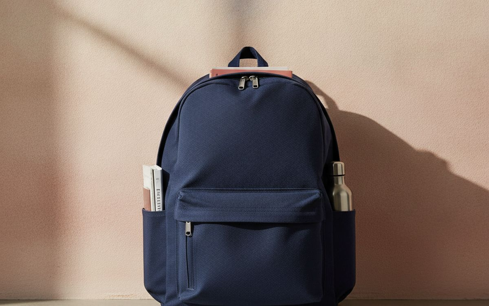
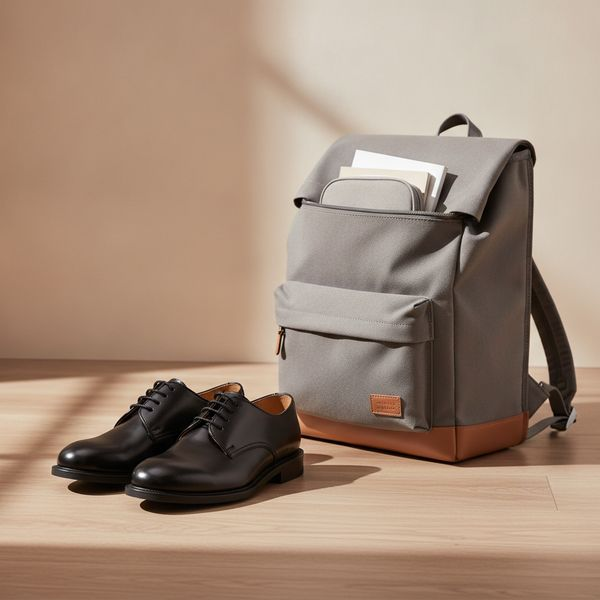
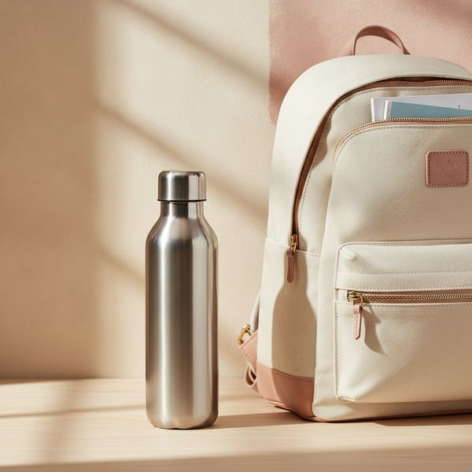
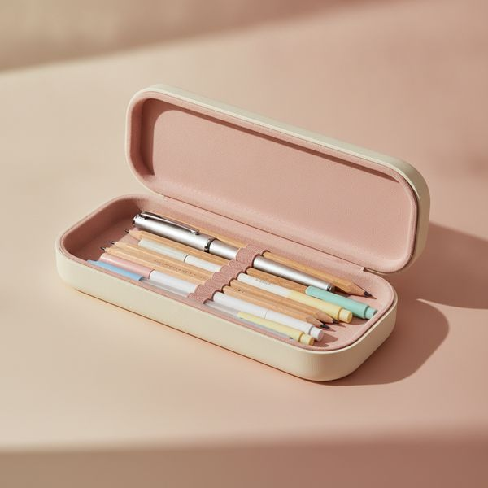
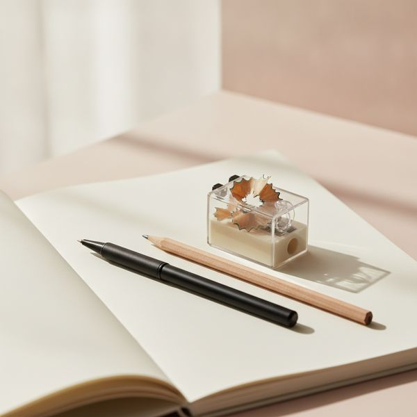
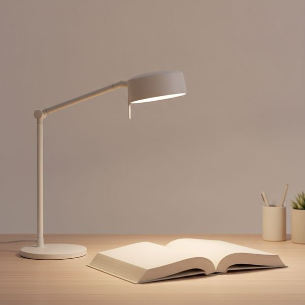
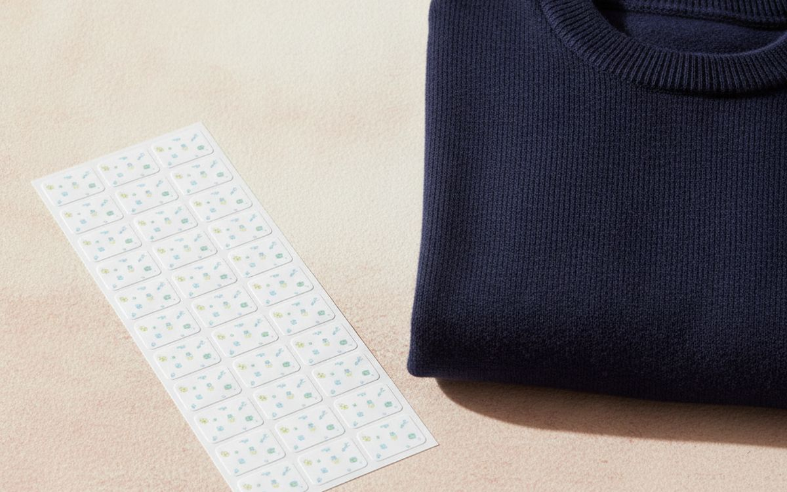
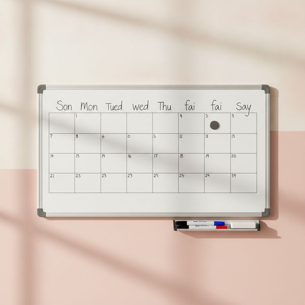
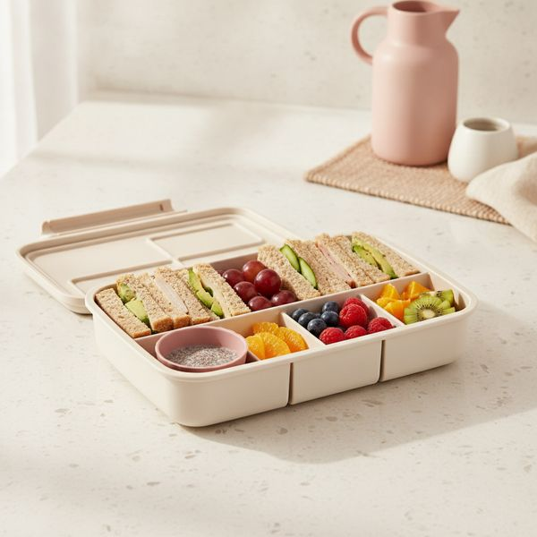
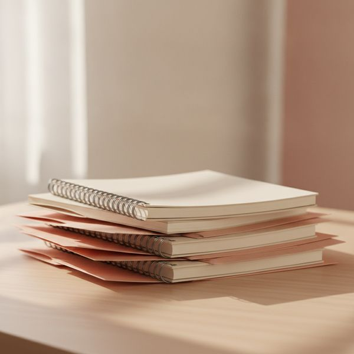

Η περίοδος της επιστροφής στα θρανία είναι η πιο αποτελεσματικά προωθημένη εβδομάδα του λιανικού εμπορίου, και τα περισσότερα από όσα αγοράζονται τότε, αντικαθίστανται μέχρι τον Δεκέμβριο. Το μοτίβο είναι σταθερό: η έκδοση ενός προϊόντος με ήρωες κινουμένων σχεδίων κοστίζει περισσότερο και διαρκεί λιγότερο από την απλή εκδοχή του.
Έτσι, αυτή η λίστα ταξινομείται με βάση την ανθεκτικότητα σε σχέση με την τιμή τους κατά τη διάρκεια μιας ολόκληρης σχολικής χρονιάς. Ορισμένες επιλογές είναι σκόπιμα αντι-προτάσεις — περιπτώσεις όπου η πιο λογική κίνηση είναι να μην ξοδέψετε τίποτα και να επαναχρησιμοποιήσετε ό,τι έχετε ήδη.
Δύο πράγματα για τα οποία αξίζει πραγματικά να ξοδέψετε χρήματα: η τσάντα, επειδή μεταφέρει βάρος σε μια αναπτυσσόμενη σπονδυλική στήλη κάθε μέρα, και τα παπούτσια, για τον ίδιο λόγο. Σχεδόν όλα τα υπόλοιπα είναι αναλώσιμα.
Οι τιμές είναι κατά προσέγγιση κατά τη στιγμή της συγγραφής, και αυτή η κατηγορία προϊόντων είναι στα πιο ακριβά της τις δύο εβδομάδες πριν από την έναρξη του σχολείου — το να ψωνίσετε την τελευταία εβδομάδα των διακοπών είναι ο χειρότερος δυνατός συγχρονισμός.
Με λίγα λόγια
Ένα σακίδιο πλάτης με ενισχυμένη πλάτη και ιμάντα στήθους
Ξοδέψτε εδώ, όχι στην κασετίνα
Γνωστοποίηση. Οι σύνδεσμοι σε αυτή τη σελίδα είναι συνδεδεμένοι. Αν αγοράσετε μέσω κάποιου, ενδέχεται να λάβουμε προμήθεια χωρίς επιπλέον κόστος για εσάς. Δεν επηρεάζει το τι μπαίνει στη λίστα ούτε τη σειρά της.
Πώς επιλέξαμε
Βαθμολογούμε με βάση το αν ένα προϊόν αντέχει μια ολόκληρη σχολική χρονιά πραγματικής χρήσης και αντιμετωπίζουμε τα επώνυμα προϊόντα με χαρακτήρες ως κόστος και όχι ως πλεονέκτημα. Βασιζόμαστε σε δημοσιευμένες δοκιμές, εργονομικές οδηγίες για το βάρος της σχολικής τσάντας και μακροχρόνιες αναφορές γονέων, και δεν έχουμε δοκιμάσει προσωπικά κάθε προϊόν που αναφέρεται εδώ. Όπου η λογική απάντηση είναι να μην αγοράσετε τίποτα, το λέμε ξεκάθαρα.
Με μια ματιά
Οι τιμές είναι ενδεικτικές κατά τη συγγραφή και αλλάζουν συχνά.
Οι επιλογές

01 · Ξοδέψτε εδώ, όχι στην κασετίναΈνα σακίδιο πλάτης με ενισχυμένη πλάτη και ιμάντα στήθους
Αυτό είναι το ένα αντικείμενο που μεταφέρει πραγματικό βάρος σε μια αναπτυσσόμενη πλάτη κάθε μέρα, οπότε εδώ είναι που αξίζει να δώσετε τα χρήματά σας. Τα χαρακτηριστικά που έχουν σημασία είναι οι φαρδιοί ιμάντες με επένδυση, το ενισχυμένο πάνελ πλάτης και ο ιμάντας στήθους, ο οποίος εμποδίζει τους ιμάντες ώμου να γλιστρούν προς τα έξω και να τραβούν τους ώμους προς τα πίσω. Οι οδηγίες γενικά προτείνουν ότι μια γεμάτη τσάντα δεν πρέπει να ξεπερνά περίπου το δέκα με δεκαπέντε τοις εκατό του σωματικού βάρους του παιδιού, και πρέπει πάντα να χρησιμοποιούνται και οι δύο ιμάντες — το να κουβαλάει το παιδί μια βαριά τσάντα στον έναν ώμο είναι μια συνήθεια που αξίζει να κοπεί από νωρίς. Τα απλά σχέδια επίσης αντέχουν περισσότερο από τη φάση των ηρώων κινουμένων σχεδίων.
$50–120Ο συμβιβασμός: Οι εκδόσεις με ήρωες κινουμένων σχεδίων κοστίζουν περισσότερο και διαρκούν λιγότερο
Γιατί είναι εδώ
- Μεταφέρει καθημερινά βάρος σε μια αναπτυσσόμενη σπονδυλική στήλη
- Ο ιμάντας στήθους διατηρεί το φορτίο στη σωστή θέση
- Τα απλά σχέδια αντέχουν για αρκετά χρόνια
Αξίζει να ξέρετε
- Οι εκδόσεις με ήρωες κινουμένων σχεδίων κοστίζουν περισσότερο και διαρκούν λιγότερο
- Χρειάζεται έλεγχο εφαρμογής καθώς το παιδί μεγαλώνει

02 · Με μέτρηση, όχι στην τύχηΣχολικά παπούτσια με σωστή εφαρμογή
Φοριούνται για έξι ή επτά ώρες την ημέρα, πέντε ημέρες την εβδομάδα, σε μια περίοδο που τα πόδια αλλάζουν μέγεθος αισθητά, γεγονός που τα καθιστά το δεύτερο πράγμα για το οποίο αξίζει να ξοδέψετε χρήματα. Ζητήστε να μετρηθούν τόσο σε μήκος όσο και σε πλάτος αντί να αγοράσετε ένα νούμερο μεγαλύτερο για να κρατήσουν περισσότερο — ένα παπούτσι που είναι πολύ μεγάλο κάνει το πόδι να σφίγγεται και να γλιστρά, κάτι που δημιουργεί άλλα προβλήματα. Ελέγξτε ξανά την εφαρμογή στα μέσα της χρονιάς. Το δέρμα γενικά αντέχει περισσότερο από το συνθετικό και παίρνει το σχήμα του ποδιού, και είναι η πιο οικονομική επιλογή σε βάθος έτους, παρόλο που η αρχική τιμή είναι υψηλότερη.
$45–100Ο συμβιβασμός: Η αγορά μεγαλύτερου νούμερου δημιουργεί τα δικά της προβλήματα
Γιατί είναι εδώ
- Φοριούνται περισσότερες ώρες από οτιδήποτε άλλο έχουν
- Το δέρμα παίρνει το σχήμα του ποδιού και αντέχει περισσότερο από το συνθετικό
- Πιο οικονομικά σε βάθος έτους παρά την υψηλότερη τιμή
Αξίζει να ξέρετε
- Η αγορά μεγαλύτερου νούμερου δημιουργεί τα δικά της προβλήματα
- Τα πόδια αλλάζουν — ξαναδοκιμάστε τα στα μέσα της χρονιάς

03 · Δοκιμάστε το καπάκι πριν αρχίσει το σχολείοΈνα ισοθερμικό, στεγανό παγούρι
Ένα παγούρι που στάζει καταστρέφει βιβλία, εργασίες και laptop, αν υπάρχει. Επομένως, η στεγανότητα είναι το μόνο χαρακτηριστικό που έχει πραγματικά σημασία και είναι το πιο δύσκολο να επαληθευτεί από μια περιγραφή προϊόντος. Γεμίστε το, γυρίστε το ανάποδα πάνω από έναν νεροχύτη για ένα λεπτό και βεβαιωθείτε πριν συμβεί το κακό μέσα στην τσάντα. Το ισοθερμικό ανοξείδωτο ατσάλι διατηρεί το νερό κρύο όλη μέρα, κάτι που αποδεδειγμένα αυξάνει την ποσότητα νερού που πίνει ένα παιδί. Επιλέξτε ένα καπάκι που το παιδί μπορεί να ανοίξει χωρίς βοήθεια — ένα παγούρι που χρειάζεται ενήλικα για να ανοίξει, μένει γεμάτο — και ένα που μπορείτε να αποσυναρμολογήσετε για να το πλύνετε, καθώς το λάστιχο στεγανοποίησης είναι το σημείο όπου μαζεύεται βρωμιά.
$20–40Ο συμβιβασμός: Οι ισχυρισμοί περί στεγανότητας χρειάζονται δοκιμή πάνω από νεροχύτη
Γιατί είναι εδώ
- Τα ισοθερμικά παγούρια αυξάνουν αποδεδειγμένα την ποσότητα νερού που πίνουν
- Το ανοξείδωτο ατσάλι δεν κρατάει γεύσεις
- Τα αποσυναρμολογούμενα καπάκια μπορούν όντως να καθαριστούν
Αξίζει να ξέρετε
- Οι ισχυρισμοί περί στεγανότητας χρειάζονται δοκιμή πάνω από νεροχύτη
- Τα περίπλοκα καπάκια χρειάζονται ενήλικα, οπότε μένουν γεμάτα

04 · Η σκληρή κερδίζει την υφασμάτινηΜια κασετίνα με σκληρό περίβλημα
Μια υφασμάτινη κασετίνα στον πάτο μιας τσάντας αφήνει ό,τι έχει μέσα να συνθλιβεί, και ένα στυλό που τρέχει μέσα σε μια υφασμάτινη κασετίνα λερώνει την ίδια την κασετίνα και ό,τι την ακουμπά. Μια κασετίνα με σκληρό περίβλημα περιορίζει και τα δύο προβλήματα για λίγα χρήματα παραπάνω. Πέρα από αυτό, αντισταθείτε στον πειρασμό της τεράστιας, πολυεπίπεδης κασετίνας με τα εκατό στυλό — είναι βαριά, πιάνει χώρο στο θρανίο που το παιδί δεν έχει, και το περιεχόμενό της έχει χαθεί μέχρι τα μέσα της χρονιάς. Μια απλή κασετίνα με φερμουάρ που περιέχει μόνο τα απαραίτητα είναι ελαφρύτερη, φθηνότερη και αντέχει περισσότερο.
$12–30Ο συμβιβασμός: Πιο ογκώδης από την υφασμάτινη μέσα σε μια γεμάτη τσάντα
Γιατί είναι εδώ
- Προστατεύει το περιεχόμενο και περιορίζει τις διαρροές
- Φθηνή
- Οι μικρές χωράνε στον πραγματικά διαθέσιμο χώρο του θρανίου
Αξίζει να ξέρετε
- Πιο ογκώδης από την υφασμάτινη μέσα σε μια γεμάτη τσάντα
- Οι μεντεσέδες είναι το σημείο που τελικά σπάει

05 · Πιο οικονομικά σε βάθος έτουςΣτυλό που ξαναγεμίζουν και ξύστρα με δοχείο
Ένα πακέτο στυλό μιας χρήσης εξαφανίζεται με αξιοσημείωτο ρυθμό και χρειάζεται να το ξαναγοράσετε τον Νοέμβριο και τον Φεβρουάριο. Ένα αξιοπρεπές στυλό που ξαναγεμίζει με ένα κουτί αμπούλες κοστίζει περίπου το ίδιο σε βάθος έτους, γράφει καλύτερα και είναι πολύ λιγότερο πιθανό να χαθεί επειδή δίνει την αίσθηση αντικειμένου παρά αναλώσιμου. Μια ξύστρα με κλειστό δοχείο είναι η μικρή λεπτομέρεια που εμποδίζει τα ξύσματα να σκορπίσουν στην τσάντα. Κανένα από τα δύο δεν είναι συναρπαστικό, αλλά και τα δύο εξαλείφουν μια επαναλαμβανόμενη αγορά που αθόρυβα κοστίζει περισσότερο από την εναλλακτική της εφάπαξ αγοράς.
$15–35Ο συμβιβασμός: Οι αμπούλες είναι μια μορφή στην οποία δεσμεύεστε
Γιατί είναι εδώ
- Πιο οικονομικά σε βάθος ολόκληρης χρονιάς
- Αυτά που ξαναγεμίζουν χάνονται λιγότερο από αυτά μιας χρήσης
- Οι κλειστές ξύστρες κρατούν τα ξύσματα εκτός τσάντας
Αξίζει να ξέρετε
- Οι αμπούλες είναι μια μορφή στην οποία δεσμεύεστε
- Ένα χαμένο στυλό που ξαναγεμίζει κοστίζει περισσότερο από ένα χαμένο στυλό διαρκείας

06 · Το παραβλέπουμε, αλλά είναι πραγματικά χρήσιμοΈνα φωτιστικό γραφείου για τα διαβάσματα
Τα διαβάσματα γίνονται συχνά στο τραπέζι της κουζίνας, που φωτίζεται από ένα φως οροφής πίσω από το παιδί, με αποτέλεσμα η σκιά του να πέφτει πάνω στη σελίδα. Ένα κατευθυνόμενο φωτιστικό γραφείου λύνει αυτό το πρόβλημα. Η ρυθμιζόμενη θερμοκρασία χρώματος αξίζει τον κόπο — ψυχρότερο φως για συγκέντρωση το απόγευμα, θερμότερο το βράδυ, όταν το έντονο φως με μπλε τόνους είναι το τελευταίο πράγμα που θέλετε πριν τον ύπνο. Τοποθετήστε το στην αντίθετη πλευρά από το χέρι με το οποίο γράφει το παιδί, αλλιώς το χέρι δημιουργεί σκιά πάνω στη γραμμή που γράφεται, που είναι το πιο συνηθισμένο λάθος και ακυρώνει όλο το νόημα.
$30–70Ο συμβιβασμός: Η λάθος πλευρά σημαίνει ότι το χέρι σκιάζει τη σελίδα
Γιατί είναι εδώ
- Απομακρύνει τη σκιά του ίδιου του παιδιού από τη σελίδα
- Το θερμό βραδινό φως ταιριάζει στην ώρα πριν τον ύπνο
- Φθηνό και διαρκεί για χρόνια
Αξίζει να ξέρετε
- Η λάθος πλευρά σημαίνει ότι το χέρι σκιάζει τη σελίδα
- Τα φθηνά LED τρεμοπαίζουν και αποδίδουν άσχημα τα χρώματα

07 · Ελάχιστο κόστος, σταματά τη συνεχή αντικατάστασηΕτικέτες με το όνομα
Πουλόβερ, παγούρια και μπουφάν εξαφανίζονται με ρυθμό που εκπλήσσει κάθε γονιό πρωτοετούς μαθητή, και τα περισσότερα από όσα καταλήγουν στο κουτί με τα χαμένα αντικείμενα δεν αναζητούνται ποτέ, απλώς επειδή κανείς δεν μπορεί να πει σε ποιον ανήκουν. Οι ετικέτες είναι η φθηνότερη δυνατή παρέμβαση ενάντια σε ένα επαναλαμβανόμενο κόστος. Τόσο οι σιδερότυπες όσο και οι αυτοκόλλητες λειτουργούν· οι σιδερότυπες αντέχουν σε περισσότερα πλυσίματα. Βάλτε τις κάπου που ένα παιδί μπορεί να τις βρει χωρίς βοήθεια — μέσα στον γιακά αντί για μια κρυφή ραφή — επειδή ο σκοπός είναι να μπορεί να αναγνωρίσει το δικό του πουλόβερ μέσα σε μια στοίβα από σαράντα ίδια.
$10–25Ο συμβιβασμός: Λειτουργούν μόνο αν τοποθετηθούν σε σημείο που να μπορεί να βρεθεί
Γιατί είναι εδώ
- Εξαιρετικά φθηνές σε σχέση με όσα αντικαθιστούν
- Οι σιδερότυπες αντέχουν στα επανειλημμένα πλυσίματα
- Επιτρέπουν στο παιδί να αναγνωρίζει τα δικά του πράγματα
Αξίζει να ξέρετε
- Λειτουργούν μόνο αν τοποθετηθούν σε σημείο που να μπορεί να βρεθεί
- Οι σιδερότυπες πρέπει να τοποθετηθούν σωστά, αλλιώς ξεφλουδίζουν

08 · Λειτουργεί καλύτερα από μια εφαρμογή σε αυτή την ηλικίαΈνας πίνακας προγραμματισμού τοίχου ή λευκός πίνακας
Ένα ορατό, κοινό πρόγραμμα σε έναν τοίχο είναι πραγματικά πιο αποτελεσματικό για τα μικρότερα παιδιά από μια εφαρμογή ημερολογίου, επειδή είναι παθητικά ορατό — κανείς δεν χρειάζεται να θυμηθεί να το ανοίξει, και ένα παιδί μπορεί να το ελέγξει μόνο του χωρίς να ρωτήσει ή να δανειστεί ένα τηλέφωνο. Τα ρούχα της γυμναστικής, τα μαθήματα μουσικής, οι προθεσμίες και το ποιος πρέπει να είναι πού, όλα βρίσκονται σε ένα μέρος από το οποίο περνάει όλη η οικογένεια. Τοποθετήστε το εκεί όπου οι άνθρωποι ήδη στέκονται, συνήθως στην κουζίνα. Αυτή είναι η πρόταση που μειώνει το πρωινό χάος περισσότερο από οτιδήποτε άλλο σε αυτή τη σελίδα.
$20–45Ο συμβιβασμός: Λειτουργεί μόνο εκεί όπου η οικογένεια όντως περνάει
Γιατί είναι εδώ
- Παθητικά ορατό — κανείς δεν χρειάζεται να το ανοίξει
- Τα παιδιά μπορούν να το ελέγχουν ανεξάρτητα
- Μειώνει αισθητά το πρωινό χάος
Αξίζει να ξέρετε
- Λειτουργεί μόνο εκεί όπου η οικογένεια όντως περνάει
- Χρειάζεται κάποιος να το κρατάει ενημερωμένο

09 · Λιγότερα δοχεία, λιγότερα χαμέναΈνα δοχείο φαγητού με ξεχωριστά χωρίσματα
Ένα ενιαίο κουτί με ενσωματωμένα χωρίσματα αντικαθιστά τρία μικρά ταπεράκια, κάτι που έχει σημασία κυρίως επειδή τα μικρά ταπεράκια είναι αυτά που ξεχνιούνται στο σχολείο. Τα ξεχωριστά τμήματα εμποδίζουν επίσης τα υγρά τρόφιμα να κάνουν τα στεγνά δυσάρεστα, που είναι ο κύριος λόγος που το φαγητό επιστρέφει σπίτι άθικτο. Ελέγξτε ότι το καπάκι σφραγίζει και ότι ένα παιδί μπορεί να ανοίξει κάθε τμήμα χωρίς βοήθεια — ο ίδιος κανόνας με το παγούρι, αφού ένα τμήμα που δεν μπορεί να ανοίξει είναι ένα τμήμα που επιστρέφει γεμάτο. Βεβαιωθείτε ότι χωράει μέσα στην τσάντα μαζί με το παγούρι πριν αρχίσει το σχολείο, όχι το πρώτο πρωί.
$25–50Ο συμβιβασμός: Ογκώδες — ελέγξτε αν χωράει στην τσάντα μαζί με το παγούρι
Γιατί είναι εδώ
- Ένα κουτί αντί για τρία ταπεράκια που χάνονται εύκολα
- Τα χωρίσματα κρατούν τα υγρά μακριά από τα στεγνά
- Πιο εύκολο να ετοιμάσετε ένα ποικίλο γεύμα
Αξίζει να ξέρετε
- Ογκώδες — ελέγξτε αν χωράει στην τσάντα μαζί με το παγούρι
- Τα τμήματα που ένα παιδί δεν μπορεί να ανοίξει, επιστρέφουν γεμάτα

10 · Σκόπιμα η φθηνή επιλογήΑπλά τετράδια και ντοσιέ — μην αγοράζετε τίποτα εξεζητημένο
Αυτή η καταχώρηση υπάρχει για να σας πει να μην ξοδέψετε. Τα τετράδια, οι φάκελοι και τα διαχωριστικά είναι αναλώσιμα, καταναλώνονται και αντικαθίστανται ανεξαρτήτως ποιότητας, και οι επώνυμες εκδόσεις κοστίζουν πολλαπλάσια χωρίς καμία απολύτως λειτουργική διαφορά. Αγοράστε τα προϊόντα ιδιωτικής ετικέτας του σούπερ μάρκετ, αγοράστε τα αφού αρχίσει το σχολείο αντί για την περίοδο πριν την έναρξη, όταν οι τιμές κορυφώνονται, και αγοράστε τα αφού έχετε την πραγματική λίστα από το σχολείο αντί να μαντεύετε. Ένα μεγάλο μέρος όσων αγοράζονται την εβδομάδα της επιστροφής στα θρανία δεν χρησιμοποιείται ποτέ.
$10–30Ο συμβιβασμός: Απαιτεί να περιμένετε την πραγματική λίστα
Γιατί είναι εδώ
- Τα προϊόντα ιδιωτικής ετικέτας είναι λειτουργικά πανομοιότυπα
- Η αγορά μετά την έναρξη του σχολείου είναι σημαντικά φθηνότερη
- Αποφεύγετε να αγοράσετε πράγματα που το σχολείο δεν ζήτησε ποτέ
Αξίζει να ξέρετε
- Απαιτεί να περιμένετε την πραγματική λίστα
- Τα δημοφιλή είδη μερικές φορές εξαντλούνται
Συχνές ερωτήσεις
Πόσο βαριά πρέπει να είναι μια σχολική τσάντα;
Οι οδηγίες γενικά ορίζουν ότι μια γεμάτη τσάντα πρέπει να ζυγίζει κάτω από το δέκα με δεκαπέντε τοις εκατό του σωματικού βάρους του παιδιού. Πρέπει πάντα να χρησιμοποιούνται και οι δύο ιμάντες, και τα βαρύτερα αντικείμενα πρέπει να τοποθετούνται πιο κοντά στην πλάτη.
Πότε είναι η φθηνότερη εποχή για αγορές;
Αφού αρχίσει το σχολείο, όχι πριν. Οι τιμές κορυφώνονται τις δύο εβδομάδες πριν από τη σχολική χρονιά και πέφτουν μόλις περάσει η βιασύνη — και μέχρι τότε έχετε την πραγματική λίστα αντί να μαντεύετε.
Αξίζει να αγοράζω επώνυμα χαρτικά;
Όχι. Τα τετράδια, οι φάκελοι και τα απλά στυλό είναι αναλώσιμα και οι εκδόσεις με ήρωες κοστίζουν πολλαπλάσια χωρίς καμία λειτουργική διαφορά. Ξοδέψτε τα χρήματα που θα γλιτώσετε στην τσάντα και τα παπούτσια, τα οποία διαφέρουν πραγματικά σε ποιότητα.
Τι χάνεται πιο συχνά;
Πουλόβερ, παγούρια και μικρά ταπεράκια, με αυτή τη σειρά. Οι ετικέτες με το όνομα και ένα ενιαίο δοχείο φαγητού με χωρίσματα αντί για πολλά ταπεράκια λύνουν το μεγαλύτερο μέρος του προβλήματος με πολύ λίγα χρήματα.
Οι προσφορές σήμερα
Δείτε τι είναι σε έκπτωση αυτή τη στιγμή.
Προσφορές →← Όλοι οι οδηγοί
Δεν είμαστε Συνεργάτες της Amazon και δεν κερδίζουμε τίποτα από συνδέσμους Amazon. Ως συνεργάτες της AliExpress, κερδίζουμε από επιλέξιμες αγορές. Οι τιμές και η διαθεσιμότητα ισχύουν κατά την ημερομηνία δημοσίευσης και ενδέχεται να αλλάξουν.